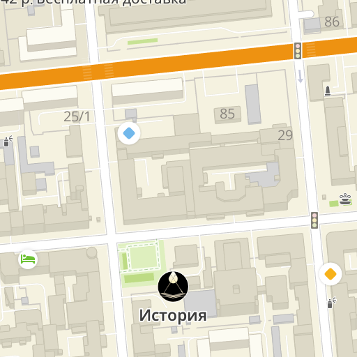
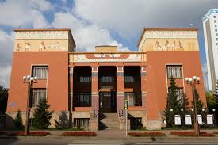

Красноярский краевой краеведческий музей
Красноярский краевой краеведческий музей — один из старейших и крупнейших музеев Сибири. Основанный в 1889 году, музей хранит богатую коллекцию, охватывающую историю, культуру и природное наследие Красноярского края.
В музее представлены экспозиции, посвященные археологии, этнографии, природе региона, а также выставки, рассказывающие о жизни и быте местных жителей.
Часы работы: Вторник-воскресенье, 10:00 - 18:00. Понедельник — выходной.
Информация о билетах: Взрослый билет — 200 рублей, льготный — 100 рублей.
 Адрес: ул. Дубровинского, 84, Красноярск, Красноярский край